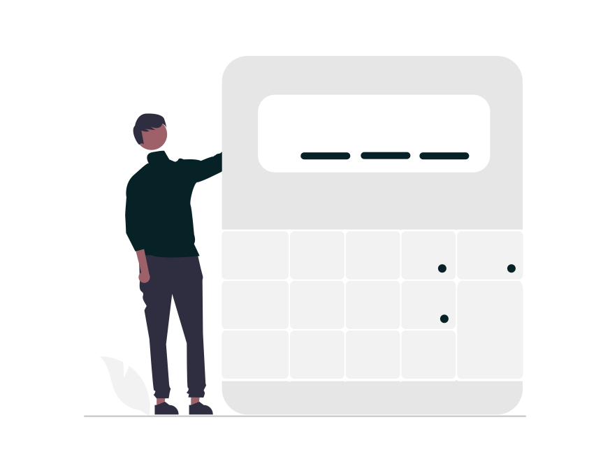
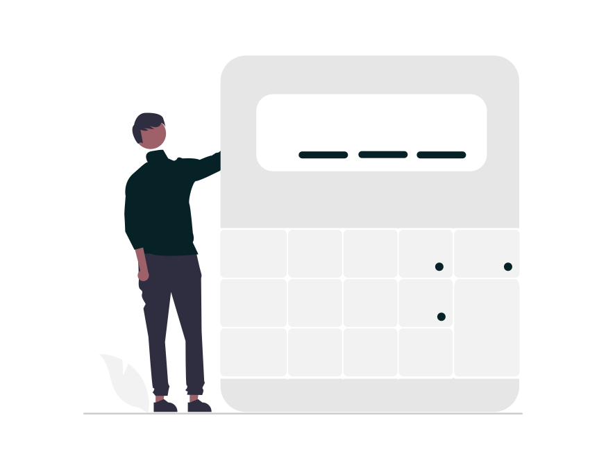

Selecciona la opción que deseas
Media
La media, también conocida como promedio, es la suma de todos los valores dividida en el total de los datos.
En esta sección podrás calcular la media, mediana y moda de la cantidad de datos que tú desees.
La media, también conocida como promedio, es la suma de todos los valores dividida en el total de los datos.
